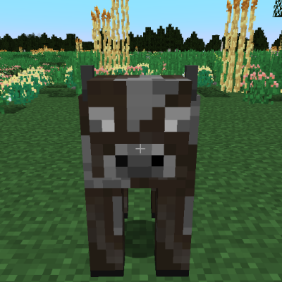
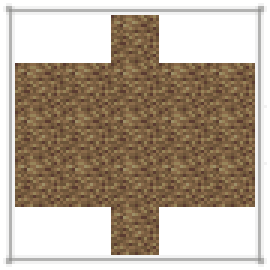

畜牧业
牲畜是可以被玩家驯服和饲养的动物。牲畜可以是公的或母的。某些动物会有两性异形的现象。例如，只有公猪会有獠牙。
牲畜会逐渐衰老。刚出生的幼崽不会产出资源，也不能繁殖。一段时间之后它们才会成年。成年的牲畜可以提供蛋、奶等资源，也可以繁殖出新的幼崽。当繁殖或产出资源多次之后，牲畜有可能会衰老。衰老的动物只能作为肉用。
这只牛太老了，不能繁殖。可以从它灰白的毛色和模糊的眼睛中看出。
喂养牲畜可以提升与之的亲密度。每种动物都有其喜爱的食物。手持食物对准牲畜按住Shift的同时按右键就可以喂养了。

按住Shift并看着牲畜时会在头上显示其亲密度。

如果不喂食，亲密度每天都会减少一点。但如果亲密度高到一定程度（出现一个白色轮廓的心），亲密度就不会因此减少了。
成年牲畜无法达到 100% 的亲密度（出现红色轮廓的心），只有幼年牲畜可能达到 100% 的亲密度。
哺乳动物是通过怀孕繁殖的牲畜。喂食一对亲密度超过 30% 的成年哺乳动物就会让它们开始……你懂的。之后雌性动物将会怀孕。怀孕的动物会在几个月至一年之内产子。
比如，猪就是哺乳动物。
产毛动物是哺乳动物的一种。如果它们和你的亲密度足够高且已成年就可以剪毛。
绵羊、羊驼和麝牛都属于这一类动物。
产奶动物也是哺乳动物的一种。只要成年且亲密度足够，就可以用木桶点击雌性产奶动物来挤奶。
山羊、奶牛和牦牛都属于这一类动物。
巢箱


卵生动物不像哺乳动物可以直接产下幼崽，而是通过产下并孵化蛋来繁殖。它们只能在巢箱中产卵。
鸭子、鹌鹑和鸡都属于这一类动物。


热****
蛋可以煎来吃或煮来吃。雄性动物可以让雌性受精，使其产下的下一枚卵变为受精卵。受精卵会在其工具提示里显示它们还需要多久才能孵化。
骑乘动物是哺乳动物的一种，可以在亲密度到达 15% 之后骑乘。
骑乘动物需要用鞍。鞍可以通过皮革塑形制作。骡、驴和马都属于这一类动物。
接下来几页会展示所有可作为牲畜的动物。
猪
猪会在温度在 -10 到 35°C 之间、降雨量至少 200 毫米的温和森林中生成。它们是没有特殊功能的哺乳动物。它们会吃任何食物（可以是腐烂的）。它们一胎能生产 1-10 个幼崽，怀孕 19 天，80 天成年。衰老前它们可以产仔 6 次。
猪
牛
牛是一种会在温度在 -10 和 35°C 之间、降雨量至少 250 毫米的大多数气候中生成的产奶动物。它们只吃谷物（可以是腐烂的）。他们一胎能生产 1-2 个幼崽，怀孕 58 天，192 天成年。若从未挤过奶，衰老前它们可以产仔 13 次。若从未产过仔，衰老前它们可以挤奶 128 次，且每天都可挤奶。
牛
山羊
山羊是一种会在温度在 -12 到 25°C 之间、降雨量至少 300 毫米的温和的气候中生成的产奶动物。它们会吃谷物、水果和蔬菜（可以是腐烂的）。他们一胎能生产 1-2 个幼崽，怀孕 32 天，96 天成年。若从未挤过奶，衰老前它们可以产仔 6 次。若从未产过仔，衰老前它们可以挤奶 60 次，且每三天可挤一次奶。
山羊
牦牛
牦牛是一种会在温度不超过 -11°C、降雨量至少 100 毫米的寒冷的气候中生成的产奶动物。它们只吃新鲜的谷物。它们一胎只能产 1 个幼崽，怀孕 64 天，180 天成年。若从未挤过奶，衰老前它们可以产仔 23 次。若从未产过仔，衰老前它们可以挤奶 230 次，且每天都可挤奶。
牦牛
羊驼
羊驼是一种会在温度在 -8 到 20°C 之间、降雨量至少 250 毫米的温和的气候中生成的产毛动物。它们会吃谷物和水果。他们一胎能生产 1-2 个幼崽，怀孕 36 天，98 天成年。若从未剪过毛，衰老前它们可以产仔 13 次。若从未产过仔，衰老前它们可以剪毛 180 次，且每 6 天长出一次羊毛。
羊驼
绵羊
绵羊是一种会在温度在 0 到 35°C 之间、降雨量 70 到 300 毫米的较干燥的气候中生成的产毛动物。它们会吃谷物。它们一胎能生产 1-2 个幼崽，怀孕 32 天，56 天成年。若从未剪过毛，衰老前它们可以产仔 6 次。若从未产过仔，衰老前它们可以剪毛 60 次，且每 9 天长出一次羊毛。
绵羊
麝牛
麝牛是一种会在温度在 0 到 25°C 之间、降雨量至少 100 毫米的温和气候中生成的产毛动物。他们只吃谷物。它们一胎只能生产 1 个幼崽，怀孕 64 天，168 天成年。若从未剪过毛，衰老前它们可以产仔 16 次。
麝牛
鸡
鸡是一种会在温度不低于 14°C、降雨量至少 225 毫米的温暖的森林中生成的卵生动物。它们会吃谷物、水果、蔬菜和种子（可以是腐烂的）。每 30 小时产一次卵，8 天孵化，24 天成年。衰老前可以产卵 100 次。
鸡
鸭
鸭是一种会在温度在 -25 到 30°C、降雨量至少 100 毫米的大多数平原中生成的卵生动物。它们会吃谷物、水果、蔬菜和种子（可以是腐烂的）。每 32 小时产一次卵，8 天孵化，32 天成年。衰老前可以产卵 72 次。
鸭
鹌鹑
鹌鹑是一种会在温度在 -15 到 15°C、降雨量至少 200 毫米的较冷的气候中生成的卵生动物。它们会吃谷物、水果、蔬菜和种子（可以是腐烂的）。每 28 小时产一次卵，8 天孵化， 22 天成年。衰老前可以产卵 48 次。
鹌鹑
驴
驴是一种会在温度在至少 -15°C、降雨量 130 到 400mm 的潮湿的平原中生成的骑乘动物。可以在它们身上放置一个箱子。它们会吃谷物和水果。它们一胎只能产 1 个幼崽，怀孕 19 天，80 天成年。衰老前它们可以产仔 6 次。
驴
骡子
骡子是一种会在温度在至少 -15°C、降雨量在 130 到 400mm 的平原中生成的骑乘动物。可以在它们身上放置一个箱子。它们是马和驴杂交的产物，只有雄性，无法繁殖。他们吃谷物和水果。80 天成年。
骡子
马
马是一种会在温度在至少 -15°C、降雨量在 130 到 400 毫米的平原中生成的骑乘动物。它们会吃谷物和水果。它们一胎只能产 1 个幼崽，怀孕 19 天，80 天成年。衰老前它们可以产仔 6 次。
马